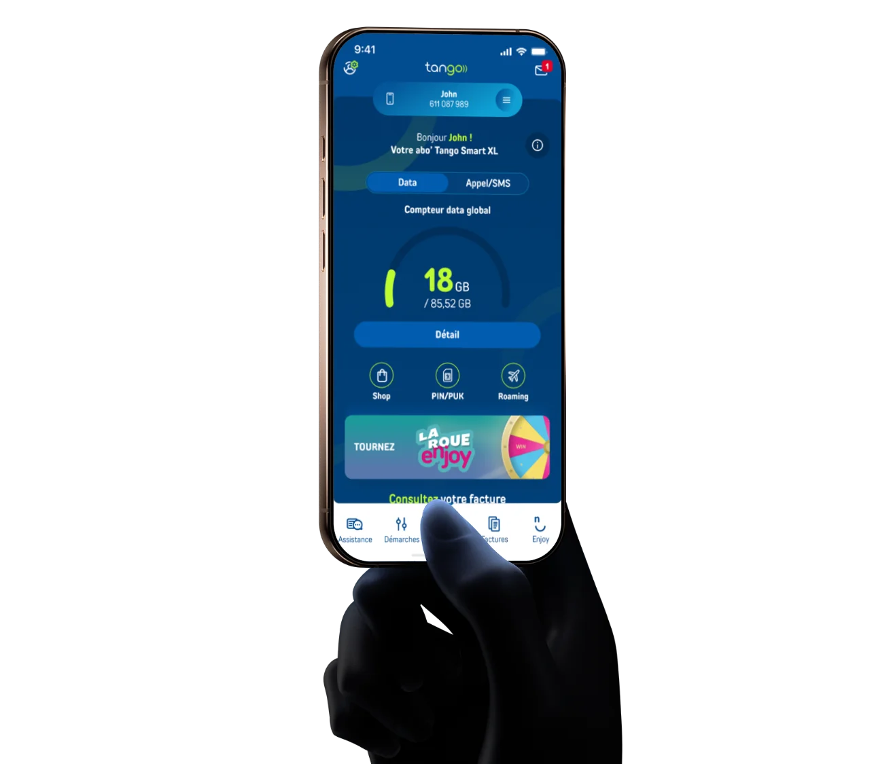
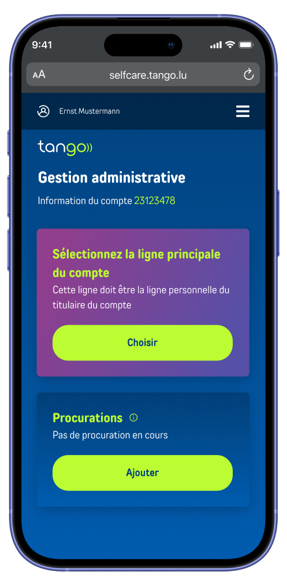
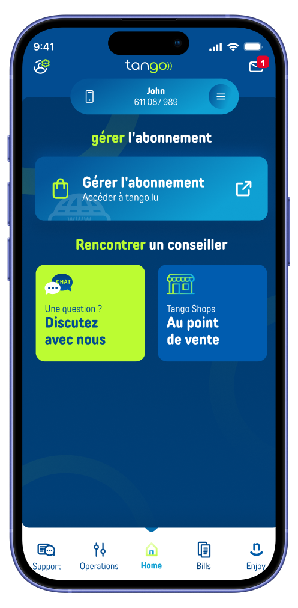
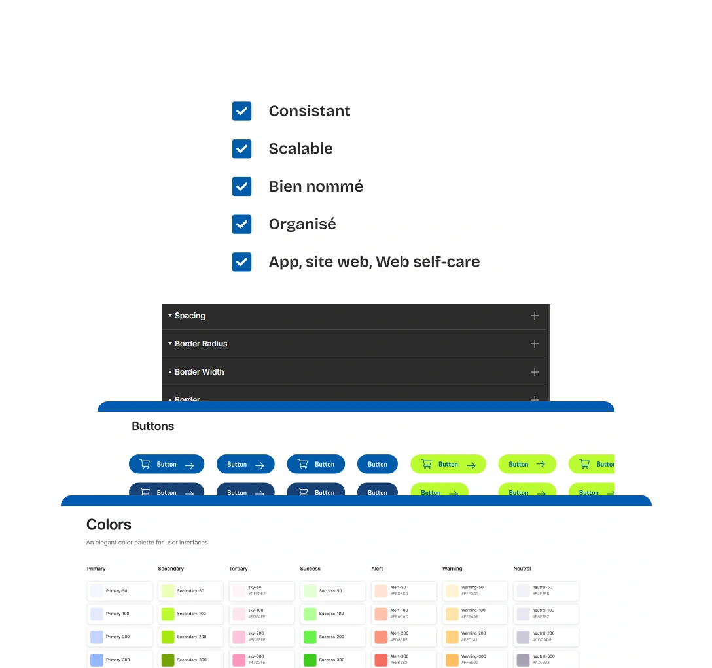
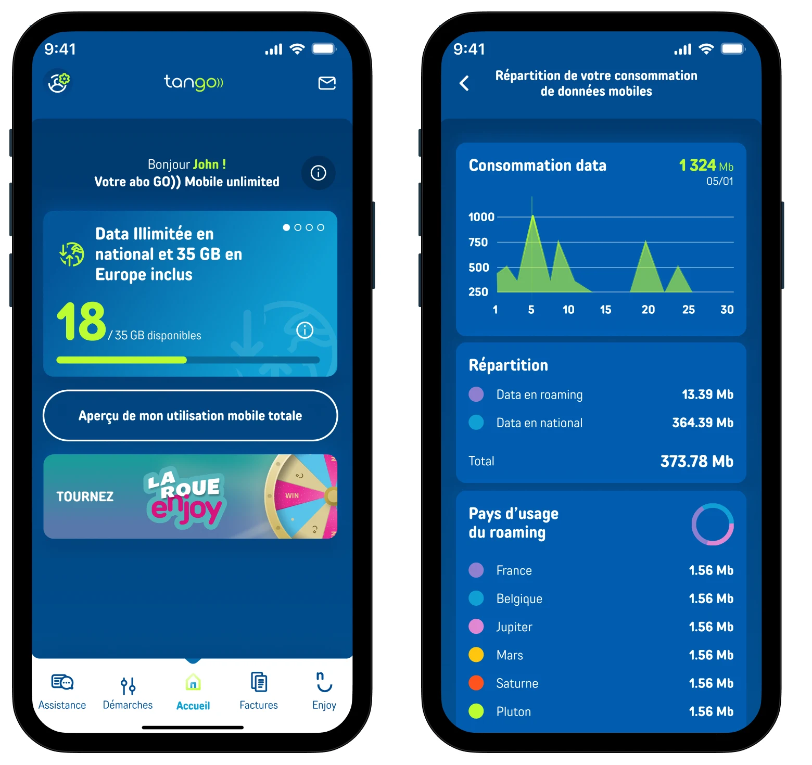
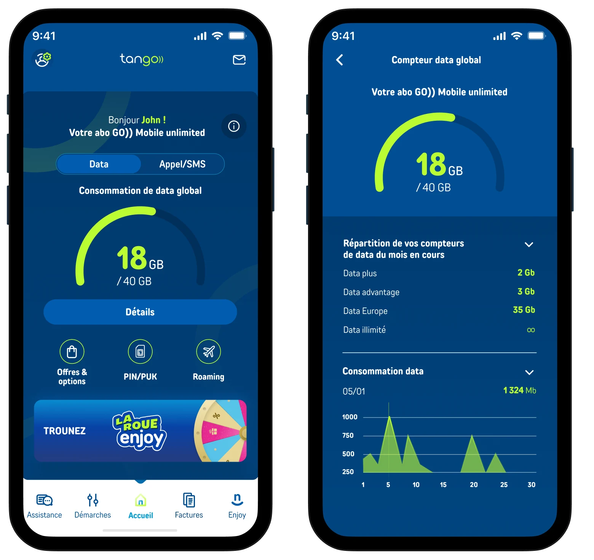
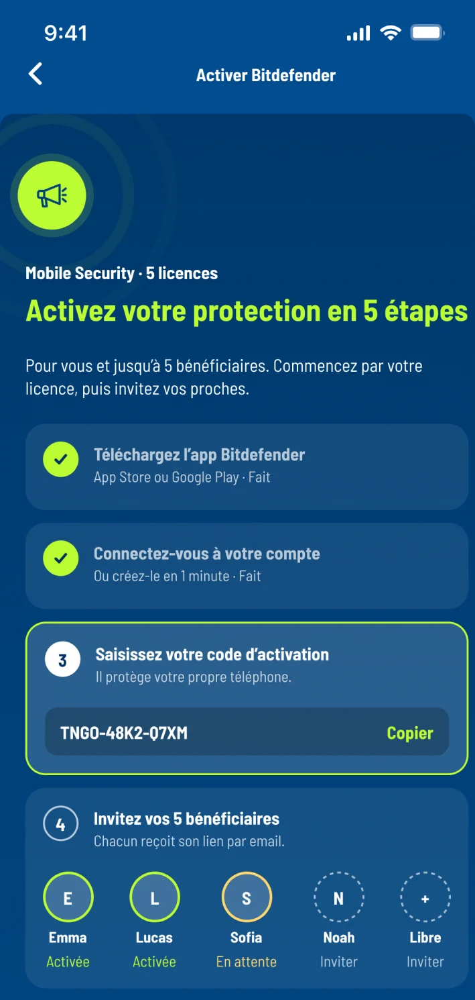
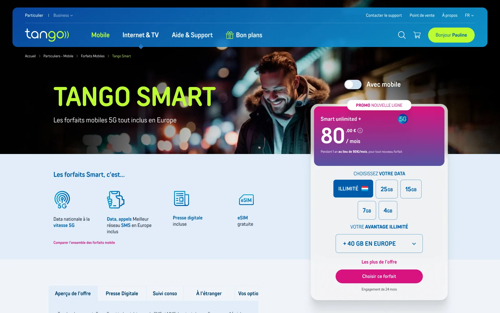
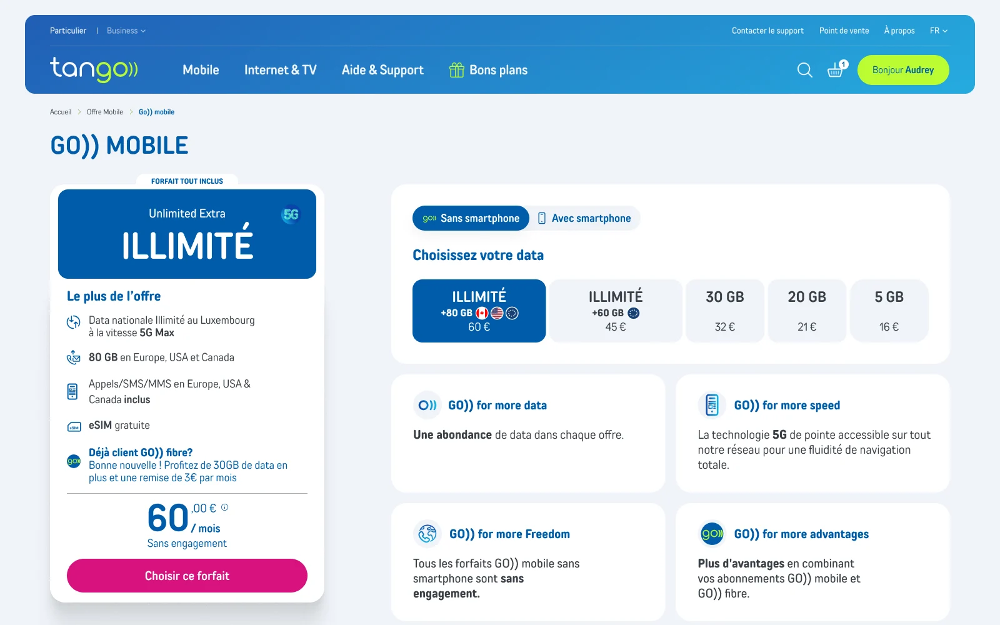

Ce site utilise des cookies essentiels pour son fonctionnement (formulaire de contact via EmailJS). Aucun cookie publicitaire ou de tracking. En savoir plus
Traiter les frictions clients d’un opérateur télécom, et unifier le design system.
18 mois chez Tango, opérateur télécom au Luxembourg : l’app mobile, le site e-commerce et l’espace client, réunis dans un même système.
Mon rôle
Product Designer · UX, UI & design system
Produits
App MyTango · tango.lu · Espace client
Secteur
Télécom · Luxembourg
Période
Fév 2024 — Août 2025

3plateformes sur un même systèmeApp mobile, site e-commerce, espace client
Frictionsclients traitées à la racineDe la lecture de la consommation à l’achat en ligne
+30–40 %vélocité de développementEstimation de l’équipe engineering, pas une mesure instrumentée
🔒Ce case study est partagé sous NDA. Les captures et métriques visibles sont publiques ou anonymisées. Les données internes, fonctionnalités non lancées et informations financières ont été omises.
En bref
Pas de designer interne, deux agences en prestation : des problèmes traités en surface.
À mon arrivée, Tango n’avait pas de designer interne. L’app, le site et l’espace client étaient confiés à deux agences, peu impliquées au quotidien dans le produit : les frictions clients étaient traitées en surface, au fil des demandes.
Le design system en était le symptôme : fragmenté entre trois fichiers Figma, il n’évoluait plus avec le produit. Mon rôle : reprendre les problèmes à la racine avec les équipes, et faire du système un outil qui évolue avec chaque projet.
01 · Contexte
Une squad au centre, des équipes autour.
Product Designer intégré dans une équipe cross-fonctionnelle : PMs, ingénieurs, analystes Customer experience. Responsable de l’UX mobile, de l’expérience web et de la gouvernance du design system.
La squad interne, et les équipes avec qui elle travaille.
Mon rôle : relier la squad à chaque équipe, avec le bon rituel pour chacune.
Squad interne
PM
Product ManagerPriorités et roadmap
JH
Product DesignerMoi · UX, UI, design system
LD
Lead DevFaisabilité et intégration
Handoff
Réunions d’alignementInsights Contentsquare
Ateliers hebdomadairesRéunions d’évolution
EngineeringDéveloppeursApp mobile et web
ExternesAgencesApp et web
Départements internesCustomer experience · Communication · Support · Produit
02 · Design system
Construire le système
Mon rôle chez Tango était stratégique. Le PM voulait internaliser le design dans une squad dédiée, pour ne plus dépendre d’agences externes. La première phase de ma mission : structurer un design system solide et unifié.
Le problème
Le système était fragmenté : espacements, composants, couleurs et icônes étaient disparates. Quand une page webview s’ouvrait dans l’application mobile, l’utilisateur avait parfois l’impression d’avoir quitté l’application Tango.
3 plateformes Tango

Espace client web

Application mobileSite tango.lu en webview
Ma démarche
1er mois
50 %Structuration DS
50 %Projets en cours
J’ai structuré le design system progressivement, méthodiquement, feature après feature. La moitié de mon temps servait à regrouper les éléments, comprendre la structure, faire le point avec les équipes engineering, aligner deux fichiers différents, faire évoluer le système avec les projets en cours, documenter et nettoyer peu à peu les anciens écrans et composants. L’autre moitié allait aux sujets en cours.
2e mois et suivants
20 %Structuration DS Documentation
80 %Projets en cours
Sur le long terme, la fondation s’est solidifiée et la documentation est devenue la référence pour tout ce dont les développeurs ont besoin. La structuration est passée à 20 % de mon temps, consacrés à documenter les évolutions et à tenir une mémoire projet.
Ce que ça a changé
Dette design réduite
Une seule source d’information à maintenir.
Développement plus rapide
+30–40 % de vélocité selon l’équipe engineering, visible aussi dans le canal Slack de questions, devenu bien plus calme.
Souveraineté
L’équipe décide de l’évolution de son système.
Direction artistique corrigée
Couleurs, dégradés et composants réalignés sur une identité unique, sur les trois plateformes.

03 · Cartographier le cas d’usage
Différents cas d’usage
Les produits Tango s’adressent à deux personas : le titulaire du compte, John, et le compte secondaire, Emily sa fille. Cela donne trois cas d’usage : lui sur son propre compte, lui sur la ligne de sa fille depuis son téléphone, elle sur son compte avec des droits restreints. Une même action ne se vit pas de la même façon dans chacun.
JohnTitulaire avec tous les droits
Veut
Gérer sa ligne et celles de sa famille depuis son téléphone, sans passer par le support.
Friction
Basculer sans cesse entre plusieurs comptes. Et activer une offre n’active pas immédiatement ses avantages sur les autres comptes.
EmilyCompte secondaire, permissions restreintes
Veut
Savoir ce qui est actif sur sa ligne et ce qu’elle peut faire elle-même.
Friction
Ne sait pas à quels avantages elle a accès.
Personas illustratifs : photos d’illustration, prénoms fictifs.
Exemple : de l’exigence à la solution
Exigence
Emily doit pouvoir reconnaître si son offre est activée ou désactivée, et comprendre qu’elle n’a pas l’autorisation de la modifier.
Solution
Notifications push et email, et statut de l’offre affiché dans l’app, avec le détail de l’offre et la raison pour laquelle elle est active.
Itération
Évaluer les points d’entrée où afficher aussi l’offre et ses avantages : de nouvelles hypothèses à vérifier, et de nouvelles exigences pour le système.
Projets phares
Parmi les projets livrés sur l’app, l’espace client web et tango.lu, dont Enjoy et son back-office, quatre parcours où la même méthode a été appliquée : comprendre le contexte, poser le problème, livrer une réponse validée.
Dashboard de consommation · Mobile
Premier écran de l’app MyTango : c’est là que chaque client vérifie sa consommation de data, d’appels et de roaming.
John
veut être rassuré qu’il a bien un forfait illimité.
veut surveiller sa consommation de data mobile pour ne pas dépasser la limite en Europe.
Analyse des sondages clientsData visualisationWorkshop facilitationUI mobile
Problème
Des jauges superposées (forfait, roaming, report, saisonnier), sans hiérarchie. Un point souvent remonté dans les sondages clients.
Réponse design
Un switch unique entre types de données, la donnée principale en avant, le détail à la demande.
Arbitrages
Écarté : garder toutes les jauges sur l’accueil. Exhaustif, mais c’était justement la source de confusion.
Retenu : une donnée principale et un switch Data / Appels-SMS. Le détail par compteur reste à un tap.
Accessibilité
La couleur ne porte jamais seule l’information : chaque jauge est doublée d’une valeur chiffrée.
Le switch reste un contrôle segmenté natif, annoncé avec son état par VoiceOver et TalkBack.
Les textes suivent la taille de police du système sans casser la carte.
Résultat
Validé à l’unanimité par le produit, le Customer experience et le management.
La confusion sur les jauges, remontée dans les sondages, est traitée à la source : une donnée principale, le détail à la demande.
Note App Store améliorée sur la période.
1« Data global » ajouté au libellé pour clarifier ce que mesure la jauge.
2Les multiples jauges sont unifiées en une seule.
3CTA uniformisé. Fondamental UX : cohérence et standards.
1John ne comprend pas pourquoi il voit une jauge alors qu’il est en illimité.
2John doit swiper plusieurs fois pour voir toutes ses jauges. Celles consommées avant la principale sont masquées.
3Bouton peu visible et non uniforme.


1234561234
4Accessibilité améliorée sur l’ensemble des écrans : meilleur contraste et taille de police augmentée.
5La répartition des données mobiles est affichée pour expliquer la jauge et son total, avec le data illimité signalé par le symbole ∞.
6Le suivi de consommation reste accessible en révélation progressive, pour réduire la charge cognitive.
4La page de détail affiche la consommation sans distinguer le contenu de l’offre, notamment le data national illimité. Charge cognitive élevée.
Activation Bitdefender · Parcours complexe
Tango propose Bitdefender en option : le titulaire l’active pour lui et peut la partager avec jusqu’à cinq bénéficiaires, chacun sur son propre appareil.
John active Bitdefender pour lui et veut protéger toute sa famille.
Cartographie des cas d’usageRédaction d’exigencesWorkshop facilitationConception incrémentale
Problème
Activer l’offre ne protégeait pas immédiatement la famille : chaque bénéficiaire devait finaliser sur son appareil, sans que John sache qui l’avait fait. S’ajoutaient des contraintes partenaire, Customer experience et légales non négociables.
Réponse design
Cartographie des cas d’usage en amont, puis un guide d’activation en cinq étapes : sa licence d’abord, puis l’invitation des bénéficiaires, avec le statut de chacun (activée, en attente, à inviter).
Arbitrages
Écarté : une activation en un clic pour toute la famille. Impossible côté partenaire : chaque licence s’installe sur l’appareil du bénéficiaire.
Retenu : un guide qui assume ces étapes au lieu de les cacher, et rend visible ce qui reste à faire.
Accessibilité
Chaque statut associe une icône et un libellé (activée, en attente, à inviter), pas seulement une couleur.
Les étapes sont numérotées et lues dans l’ordre par un lecteur d’écran.
Le code d’activation se copie en un geste, sans ressaisie.
Résultat
Validé à l’unanimité par le management, le Customer experience et la tech.
John voit à tout moment qui est protégé dans sa famille, et ce qui reste à faire.
Les contraintes partenaire, légales et Customer experience sont respectées sans être reportées sur le client.

Shop in-app · Offres et avantages inclus
Le Shop de l’app MyTango regroupe l’abonnement, les options et les avantages inclus dans l’offre. Un enjeu qui grandit : 76 % du temps passé sur le numérique se passe désormais dans des apps (eMarketer, 2026).
John
veut voir les offres et changer d’abonnement depuis l’app, sans refaire connexion et achat au passage en webview.
veut savoir quels avantages de son offre sont actifs, et lesquels demandent une activation manuelle.
Emily
veut savoir ce qui est actif sur sa ligne et ce qu’elle peut faire elle-même.
ne doit pas voir d’actions réservées au titulaire du compte.
Architecture de l’informationGestion des étatsRédaction d’exigencesUI mobile
Problème
Un Shop peu engageant et qui convertissait peu. John ne retrouvait ni son offre active ni les avantages inclus, et changer d’abonnement basculait vers tango.lu en webview : reconnexion et parcours d’achat à refaire.
Réponse design
L’abonnement en tête du Shop, les parcours de changement d’offre et de mobile remontés en premier, les options actives signalées dans chaque catégorie, et les avantages inclus à activer mis en avant. Pour la webview, l’exigence portée à l’équipe : conserver la session et le panier.
Arbitrages
Écarté à court terme : refaire tout l’achat en natif, hors de portée de la feuille de route.
Retenu : remonter les parcours d’achat dans le Shop dès maintenant, et porter l’exigence de session conservée pour la webview.
« Désactiver » en bleu plutôt qu’en rouge : c’est un retour en arrière, pas une erreur ni un danger.
Accessibilité
Les options actives sont signalées par une coche et un libellé, pas uniquement par la couleur.
« Désactiver » garde la taille et la cible tactile d’« Activer » : seule la couleur change, et le libellé reste explicite.
Le contraste du vert Tango et des textes sur fond bleu est vérifié pour rester lisible.
Hypothèses suivies dans le temps
Plus de changements d’offre finalisés dans l’app, moins de bascules vers tango.lu.
Un taux d’activation en hausse pour les avantages inclus, comme Net Protect.
Moins d’abandons entre « Changer mon offre » et la validation.
Moins de contacts support du type « quelle est mon offre, quelles options sont actives ».
Résultat
Un avantage inclus n’est plus un avantage oublié : Net Protect a son propre appel à l’action.
Un même Shop pour le titulaire et le compte secondaire, qui s’adapte aux droits de chacun.
L’exigence de session conservée en webview est portée à l’équipe, avec des indicateurs pour la suivre.
1Rien n’indique l’abonnement en cours : John doit revenir à l’accueil pour savoir ce qu’il a avant d’en changer.
2Net Protect, inclus dans l’offre mais à activer, ressemble à n’importe quelle option payante.
3Changer d’abonnement ou de mobile ouvre tango.lu en webview : reconnexion et parcours d’achat à refaire.
4Toutes les options se présentent de la même façon : impossible de voir lesquelles sont déjà actives.
5Activer et désactiver partagent le même bouton vert : rien ne signale qu’une désactivation est un retour en arrière.
1L’abonnement et le nombre d’options actives s’affichent en tête du Shop.
2Une carte « Inclus, activation requise » isole Net Protect, avec le nombre de bénéficiaires et un bouton « Finaliser » direct.
3Changer d’offre, de mobile ou commander une ligne : les parcours qui engagent le plus sur tango.lu remontent en tête du Shop.
4Les options actives sont signalées par un badge coché dans leur catégorie et une coche dans la liste ; une option en attente, comme Net Protect, garde un badge vide.
5« Désactiver » passe en bleu : un retour en arrière ne se confond plus avec une activation.
1Rien n’indique l’abonnement d’Emily ni ce qui est déjà actif sur sa ligne.
2Forfait Bloqué+ et Net Protect sont présentés comme des options à prendre, sans dire qu’ils sont déjà actifs.
3Le bouton promet une désactivation, mais la seule façon de retirer l’option est de changer de forfait : d’où l’appel au service client.
1Emily voit son abonnement GO)) Kids Mobile et le nombre d’options actives.
2Forfait bloqué et Net Protect sont signalés comme actifs, avec un badge dans leur catégorie.
3Plus de fausse promesse : la fiche indique que l’option est incluse dans l’abonnement, sans bouton de désactivation.
4Compte secondaire : les actions réservées au titulaire (changer d’offre, de mobile, commander une ligne) n’apparaissent pas.
E-commerce tango.lu · Configurer son offre
La page offre de tango.lu, où le client configure son forfait (data, avec ou sans smartphone) avant de l’ajouter au panier. Les avantages associés aux offres n’étaient pas modifiables : décision Customer experience et Produit.
John
a besoin de comparer les offres et leurs avantages avant de remplir son panier.
a besoin d’être authentifié automatiquement quand il valide son panier.
Analyse ContentsquareHiérarchie de l’informationOptimisation de la conversionUI web
Problème
Des offres mal comprises : un point souvent remonté par les clients. Pas de vue d’ensemble pour comparer avant d’acheter, des avantages cachés dans une modale, et un lien « Comparer » qui faisait quitter la page vers une autre qui convertissait mal.
Réponse design
Tous les forfaits et leurs prix visibles d’un coup d’œil, les avantages listés dans la carte, la comparaison intégrée à la page.
Arbitrages
Contrainte : les avantages n’étaient pas modifiables. Plutôt que de les réduire, le design les rend comparables.
Écarté : la page de comparaison dédiée. Retenu : le comparateur détaillé plus bas sur la même page.
Accessibilité
Le choix avec ou sans smartphone devient un vrai sélecteur, utilisable au clavier.
Les USP cliquables deviennent des liens d’ancre explicites, plus de faux boutons.
Plus de modale pour lire les avantages : moins de pièges de focus au clavier et au lecteur d’écran.
Résultat
Validé et implémenté sur tango.lu.
La comparaison reste sur la page : plus de sortie vers une page qui convertissait mal.
Les avantages imposés deviennent un argument comparable plutôt qu’une liste cachée en modale.


1234512345
1Les arguments clés (USP) sont très cliqués alors qu’ils ne sont pas cliquables.
2« Comparer l’ensemble des forfaits » est très cliqué, mais fait quitter la page vers une autre qui échoue à convertir, avec un chargement inutile.
3Le choix « Avec mobile » est peu visible.
4Il faut cliquer sur chaque forfait pour voir son prix. Pas de vue d’ensemble pour comparer avant d’acheter.
5Les avantages s’ouvrent dans une modale, offre par offre : impossible de les comparer côte à côte.
1Les USP deviennent cliquables et renvoient vers une ancre plus bas, avec plus de détails.
2La comparaison reste sur la page : forfaits côte à côte ici, comparateur détaillé plus bas. Plus de changement de page.
3Le choix avec ou sans smartphone devient un sélecteur visible.
4Chaque forfait affiche son prix et ses avantages data, sans clic.
5Les avantages sont listés directement dans la carte de l’offre, sans modale.
04 · Résultats
Ce que la mission a changé
Des frictions majeures enfin traitées, une squad où les équipes s’alignent, et des résultats dont la mesure se poursuit côté produit.
Frictions
Des frictions majeures enfin adressées
Jauges illisibles, activation Bitdefender opaque, avantages inclus oubliés, comparaison qui faisait quitter la page : avant, aucune solution n’était engagée sur ces points. Chacun a maintenant une réponse validée par les équipes.
Leadership
Des ateliers animés chaque semaine, une squad devenue le point d’alignement
J’animais les ateliers hebdomadaires avec Customer experience, Communication, Support, Produit et le management. Les équipes y alignaient leurs priorités, les décisions se prenaient ensemble, et les projets avançaient plus vite : moins d’allers-retours, des retours clients pris en compte avant le développement.
Présentations des maquettes
Affinity diagramming des retours clients
Affinement des personas
Système
Un design system commun aux trois plateformes
Une seule source pour l’app, l’espace client et tango.lu. +30–40 % de vélocité selon l’équipe engineering, et un canal de questions devenu bien plus calme.
Mesure
Des hypothèses posées, des résultats en cours d’analyse
La mesure d’impact est menée par les équipes produit et data, hors de mon périmètre. Une hypothèse de réduction suivie dans le temps est déjà une avancée : avant, ces problèmes n’étaient pas adressés.
05 · Avec du recul
Ce que je ferais différemment
Après le premier mois, documenter chaque évolution du design system occupait encore 20 % de mon temps. Aujourd’hui, j’automatiserais cette documentation avec un serveur local connecté à Figma et à une IA.
Automatisé
Une documentation qui se met à jour seule
Specs des composants, états, tokens et changelog générés à partir des fichiers Figma, à chaque évolution.
Humain
Des décisions qui restent à l’équipe
Relecture, arbitrages et règles d’usage restent validés par le design et l’engineering.
Libéré
Du temps rendu au produit
Les 20 % consacrés à la documentation repartent vers la recherche utilisateur et les projets.
Ce case study est partagé sous NDA. Contactez-moi pour un walkthrough complet en appel.